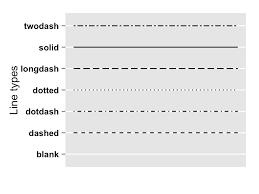
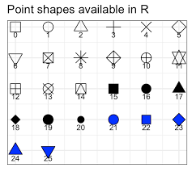
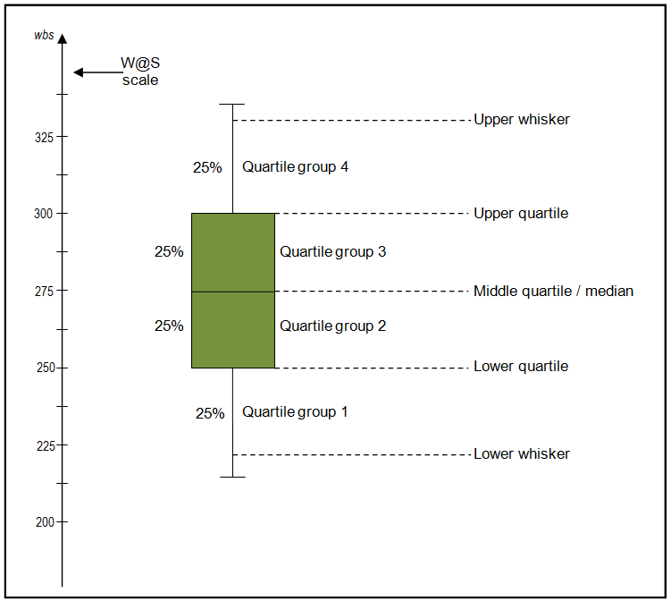

O ggplot2 é um dos pacotes mais populares para visualização de dados em R. Ele segue a abordagem Grammar of Graphics, proposta por Hadley Wickham, que organiza a criação de gráficos de uma maneira estruturada e flexível. Isso permite criar visualizações complexas de maneira intuitiva e clara. Nesta seção, será explorada a construção de gráficos em R com o ggplot2. Serão abordados:
O pacote ggplot2 no R utiliza uma estrutura baseada em camadas. Para criar um gráfico você precisa de:
ggplot())O primeiro passo é criar um objeto ggplot, definindo os dados e o mapeamento estético (variáveis que serão representadas graficamente).
ggplot(data = seu_dataset, aes(x = variavel_x, y = variavel_y))geom_*)As camadas geométricas definem como os dados serão representados (pontos, linhas, barras, etc.).
+ geom_point() # Para gráficos de dispersão
+ geom_line() # Para gráficos de linhas
+ geom_bar() # Para gráficos de barras
scale_* e labs())+ labs(title = "Título do Gráfico", x = "Eixo X", y = "Eixo Y")
+ scale_y_log10()
theme_*)+ theme_minimal()
+ theme_bw()
facet_*)+ facet_wrap(~ categoria)
+ facet_grid(linhas ~ colunas)
ggplot(): Cria o objeto inicial do gráfico.aes(): Define o mapeamento estético.geom_*(): Adiciona camadas geométricas.scale_*(): Personaliza escalas.theme_*(): Modifica o tema.facet_*(): Divide o gráfico em facetas.Gráficos de dispersão no ggplot2 são usados para visualizar a relação entre duas variáveis contínuas.
library(ggplot2)
data <- data.frame(
x = rnorm(100),
y = rnorm(100)
)
ggplot(data, aes(x = x, y = y)) +
geom_point() +
labs(title = "Gráfico de Dispersão", x = "Eixo X", y = "Eixo Y")
ggplot(data, aes(x = x, y = y)) +
geom_point(color = "blue", size = 3)
data$category <- sample(c("A", "B", "C"), 100, replace = TRUE)
ggplot(data, aes(x = x, y = y, color = category)) +
geom_point()
ggplot(data, aes(x = x, y = y)) +
geom_point() +
geom_smooth(method = "lm", color = "red")
ggplot(data, aes(x = x, y = y)) +
geom_point() +
facet_wrap(~category)
labs() e theme() para tornar o gráfico mais apresentável.scale_x_log10() ou scale_y_log10() se necessário.Gráficos de linha no ggplot2 são úteis para séries temporais ou relações ao longo do tempo.
library(ggplot2)
data <- data.frame(
x = 1:10,
y = cumsum(rnorm(10))
)
ggplot(data, aes(x = x, y = y)) +
geom_line() +
labs(title = "Gráfico de Linha", x = "Eixo X", y = "Eixo Y")
ggplot(data, aes(x = x, y = y)) +
geom_line(color = "blue", linetype = "dashed", size = 1.2)
Tipos de linhas:

ggplot(data, aes(x = x, y = y)) +
geom_line(color = "blue") +
geom_point(color = "red", size = 3)
Tipos de pontos:

data <- data.frame(
x = rep(1:10, 3),
y = cumsum(rnorm(30)),
group = rep(c("A", "B", "C"), each = 10)
)
ggplot(data, aes(x = x, y = y, color = group)) +
geom_line() +
labs(title = "Gráfico de Linha com Grupos")
ggplot(data, aes(x = x, y = y, color = group)) +
geom_line() +
geom_hline(yintercept = 0, linetype = "dashed", color = "black") +
geom_vline(xintercept = 5, linetype = "dotted", color = "red") +
labs(title = "Gráfico com Linhas de Referência")
ggplot(data, aes(x = x, y = y)) +
geom_line() +
facet_wrap(~group) +
labs(title = "Facets por Grupo")
geom_text() ou geom_label() para destacar pontos.geom_smooth() para tendência.theme_minimal() ou theme_classic() para estética.O box-plot resume a distribuição de dados, destacando mediana, quartis e possíveis outliers.
Estrutura do box-plot:

library(ggplot2)
data <- data.frame(
categoria = rep(c("A", "B", "C"), each = 50),
valor = c(rnorm(50, 5), rnorm(50, 7), rnorm(50, 6))
)
ggplot(data, aes(x = categoria, y = valor)) +
geom_boxplot() +
labs(title = "Box-Plot Básico", x = "Categoria", y = "Valores")
ggplot(data, aes(x = categoria, y = valor, fill = categoria)) +
geom_boxplot(color = "black") +
labs(title = "Box-Plot com Cores Personalizadas")
ggplot(data, aes(x = categoria, y = valor)) +
geom_boxplot(outlier.color = "red", outlier.size = 3) +
labs(title = "Box-Plot com Outliers Destacados")
data$grupo <- rep(c("G1", "G2"), each = 75)
ggplot(data, aes(x = categoria, y = valor, fill = grupo)) +
geom_boxplot(position = position_dodge(0.8)) +
labs(title = "Box-Plot com Grupos")
ggplot(data, aes(x = categoria, y = valor)) +
geom_boxplot() +
geom_jitter(width = 0.2, alpha = 0.5, color = "blue") +
labs(title = "Box-Plot com Pontos Jitter")
ggplot(data, aes(x = categoria, y = valor)) +
geom_boxplot() +
facet_wrap(~grupo) +
labs(title = "Box-Plot por Grupos")
geom_violin() para detalhar densidade.theme(axis.text.x = element_text(angle = 45, hjust = 1))| Aspecto | Dot Plot | Gráfico de Dispersão |
|---|---|---|
| Finalidade | Mostrar frequências ou distribuições | Mostrar relação entre duas variáveis |
| Eixos | Geralmente um eixo é categórico | Ambos os eixos são contínuos |
| Visualização | Pontos empilhados para mostrar frequência | Posição indica valores específicos |